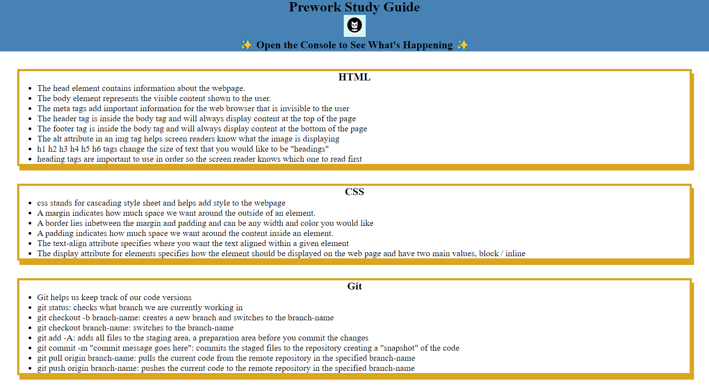
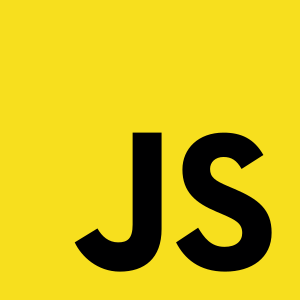

About Me
My name is Chase Seeberger and I currently live in Oregon with my girlfriend, our two cats: Baby and Marie, and my betta fish Sebastion. I have been working with computers since I was a kid and I have always been fascinated with how they work and what they can do. I built my first computer when I was 12 with the help of my mom and a set of instructions that were not written in English. Since then, I have been hooked on figuring out how technology works and how I can use it to make my life easier. I took my first computer science class freshman year of high school and I loved it. Currently, I am studying web developement through a bootcamp program put on by the University of Oregon where I am learning to develope things that make our lives easier.
Creativity has always been very important to me and I express it through my hobbies. Some of my hobbies include playing video games, building aquariums, and painting. My love for video games comes from having the ability express myself, solve problems, and be creative in a way that I can't in real life. I love to build aquariums because it allows me to create a beautiful ecosystem that I can watch grow and change over time. Painting allows me to express my creativity in a way that is very relaxing and therapeutic. Web developement is a great way for me to express my creativity and I am excited to see where it takes me. A future project I would love to build would be a website where the user can create their own aquarium and watch it grow and change over time.
My Work
Prework Study Guide
This is a website I built as a study guide before starting the bootcamp. It is a website that contains notes about HTML, CSS, Git, and Javascirpt.
SEO & Semantic HTML
This is a website for a marketing company called Horiseon. This website was built to be accessible and to be optimized for search engines. This website was built using HTML and CSS.

Javascript Text Game
This is a text based game that I built using vanilla Javascript (no frameworks). It utilizes Bootstrap for the styling and javascript for the functionality.
